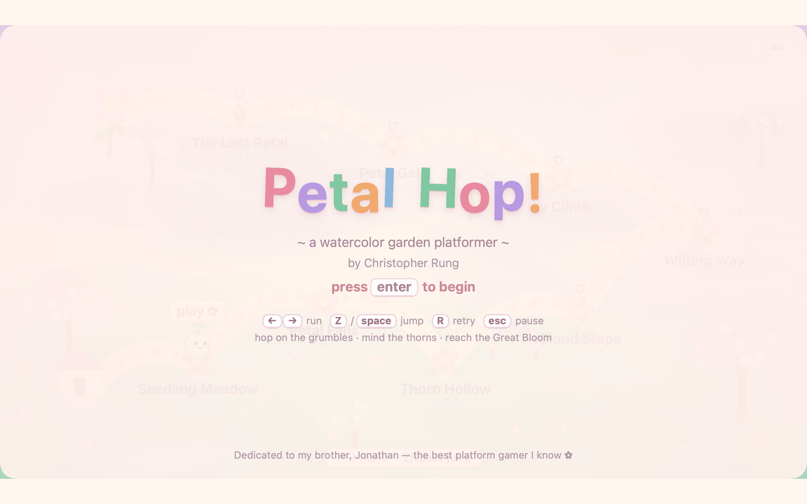
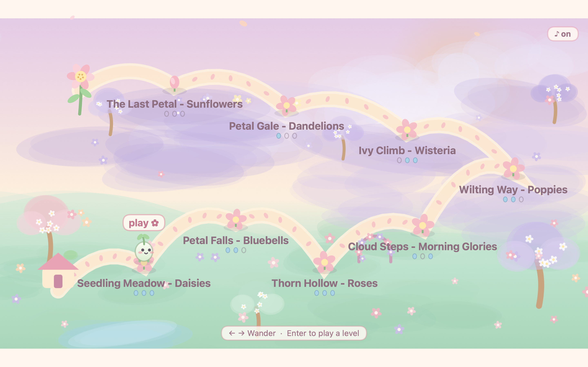
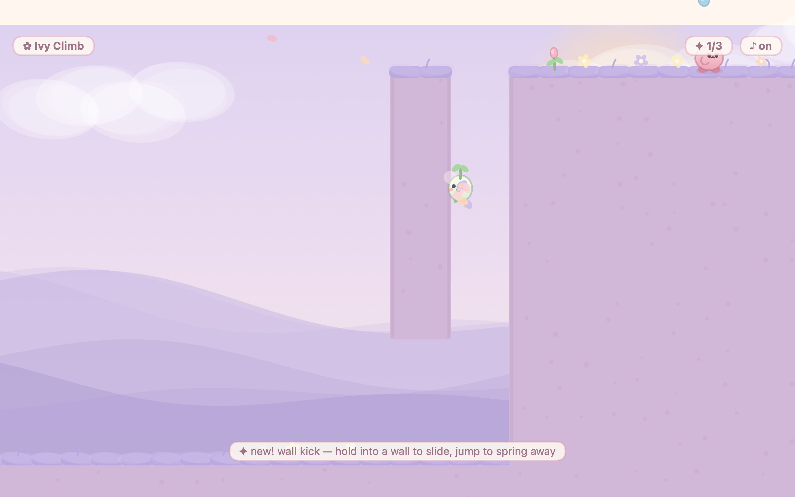
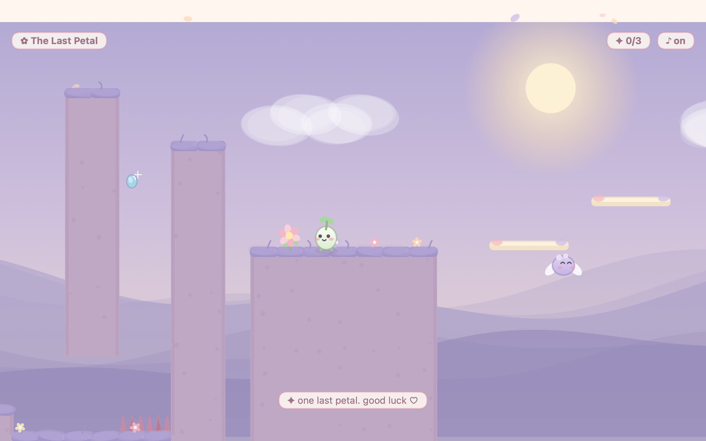

~ a watercolor garden platformer ~




Help Pip the sprout hop through eight hand-painted gardens — from Seedling Meadow to the night-blooming finale. Hop on the grumbles, mind the thorns, ride the springs, and reach the Great Bloom. Unlock the double hop and the wall kick as you go, gather dewdrops off the beaten path, and rest at checkpoint flowers along the way. Plays with keyboard or a game controller.
Email clrung@gmail.com and I'll happily help.
Petal Hop collects no data whatsoever. There is no network connection, no analytics, no accounts, and no ads. Your progress is saved only on your own Mac. Read the full privacy policy.